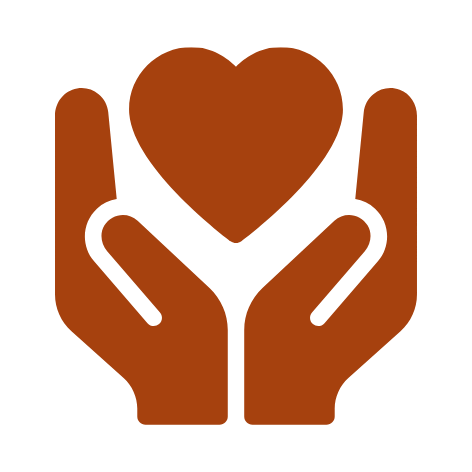
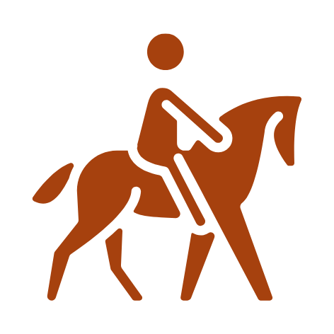
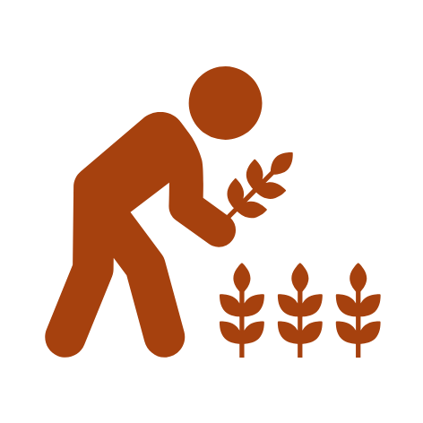

Página 1 de 1
1-12 de 120
Leyenda
Alojamiento

Artesanía

Paseos a caballo

Experiencias
Gastronomía
Guías
Los colores de los iconos varían según la región: amarillo (Puna), bordo (Quebrada), verde (Yungas)